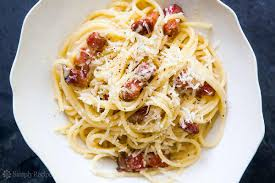

Main Course
Here you can order some of our famous dishes to be delivered straight to your door from our restraunt fully cooked and ready to eat.
Call 555-5555 to order (totaly not fake)

Here we have one of our signature Italian dishes, Pizza Margherita. Our Pizza Margherita is made fresh daily using our signature maranara sause and delectable cheese, topped with fresh cherry tomatos. Price: $25.99 (+$5.00 for every extra topping)
Our next dish is one of our more popular ones, Spaghetti alla Carbonara. Using olive oil directly from Italy and bacon cooked to prefection we carefuly assemble this dish with a team of our talented chefs. Dashed with salt and pepper and lightly coated with your choice of parmesian or pecorino cheese, this whole pound of of pasta will satisfy both your tastebuds and your stomach. Price: $50.99 (+$5.00 for every extra topping)

The third dish on our menue is our Fettuccine Pesto. Using only the freshest basil, pine nuts, and garlic, we hand chop and mix the ingredients with butter and heavy cream to make our Pesto sauce. The sauce is then drizzled over twelve ounces of fresh, steaming pasta, then top it with grated parmesan and chopped tomatos. Price: $45.99 (+$5.00 for every extra topping)

The next dish is our Filet Mignon. Cooked to your choice of well done to rare, our chefs pay close attention to be sure it's cooked to perfection. We season the steaks with salt and pepper before cooking them in balsamic vinegar and red wine to give it a mouth-watering sweet and tangy flavor that all of our customers enjoy. Price: $55.99 (+$5.00 for every extra item)
Looking for something a little more Asian? look no further than our delicoius Yakisoba Chicken. Using an authentic Japanese recipe, our chefs work hard to perfectly balance the sauces and leave your tastebuds utterly satisfied. Price: $75.99 (+ $5.00 for every extra item)

Splash into thid fish dish, our Grilled Fish Steaks. Perfectly jucy, these fish steaks are able to satisfy even the pickiest of fish eaters. Price: $57.95 (+ #5.00 for every extra item)